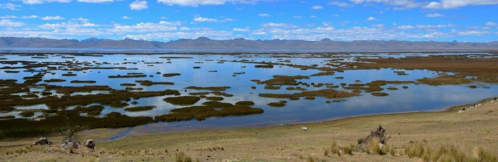

Lago Chinchaycocha · Perú
Índice de calidad
de Agua
Una herramienta para estudiar la calidad del agua del lago, a partir de mediciones y modelos predictivos.
Abrir simulador
Herramienta de análisis
Simulador del ICA-PE
Elige las mediciones disponibles. El resultado corresponde al panel parcial de doce parámetros.
Cómo se completa el panel
Selecciona un parámetro para ver su origen o ir a su campo.
Lectura del índice
Interpretación del ICA
La categoría correspondiente a tu resultado se destaca en la tabla.
| Rango del ICA | Calificación | Interpretación |
|---|---|---|
| 90–100 | Excelente | La calidad del agua está protegida y las condiciones son muy cercanas a los niveles naturales o deseados. |
| 75 a <90 | Bueno | La calidad se aleja un poco de la condición natural y puede presentar amenazas o daños de poca magnitud. |
| 45 a <75 | Regular | La calidad natural se ve amenazada ocasionalmente. Muchos usos necesitan tratamiento. |
| 30 a <45 | Malo | La calidad incumple los objetivos con frecuencia. Muchos usos necesitan tratamiento. |
| 0 a <30 | Pésimo | La calidad incumple los objetivos y casi siempre se ve amenazada o dañada. Todos los usos necesitan tratamiento previo. |
Fuente: guía ANA entregada, página impresa 19. Cortes de 30, 45, 75 y 90 antes de redondear.
Método y alcance del cálculo
Para un monitoreo, la página impresa 21 usa F1 = F2 = 100 × parámetros incumplidos / parámetros evaluados y F3 = 100 × S / (1 + S), con S igual a la suma de excedencias. Para un período de al menos cuatro monitoreos, las páginas impresas 17–18 normalizan S entre el total de datos y F1 cuenta parámetros con algún incumplimiento.
Las concentraciones estimadas y L/2 son supuestos del proyecto. El cálculo con las 12 mediciones es la referencia del mismo panel parcial. Los modelos predicen ese panel.